Simulation-Based System Design
- How to generalize UAM/UAV aircraft system design?
- How to improve conceptual design fidelity?
- Development of the RISPECT+ conceptual design tool
- Physics-based electric propulsion system modeling

Hanseo University · Dept. of Unmanned Aircraft Systems
Simulation-based design, mission-level operation, and experiment-based analysis for UAM, UAVs, and beyond.
Designing for urban air mobility
Vision
AADL develops conceptual design methods for next-generation aircraft, covering configuration, aerodynamics, electric propulsion, weight, cost, and mission operation, and validates them with experiments.
AADL은 차세대 항공기 개념설계와 이를 구성하는 형상·공력·추진시스템·중량·경제성·임무 운용 관련 연구를 수행합니다.
We turn mission requirements into sized aircraft concepts that can be analyzed, and we evaluate how they perform in the missions they are built for.
Our in-house design code RISPECT+ sizes UAM, UAV, and unconventional aircraft; mission-oriented measures of effectiveness then decide how many aircraft to deploy, where, and when.
Battery, fuel-cell, and motor–propeller tests reveal unmodeled physical phenomena, which we feed back into the design models with physics-based models and Gaussian process regression.
Large-language-model agents, MBSE data structures, and graph-based feasibility models shorten the loop from requirement to verified design.
Lift+cruise UAM aircraft, wildfire suppression UAVs, micro UAVs, and Mars rotorcraft share one design framework.

Research Focus
Every project at AADL asks one of six questions. The answers connect our design code, our mission operation framework, and our test benches.
Research keywords
Highlights
System of Systems-Driven Wildfire Suppression Aircraft Design Framework. Final ranking: 1st Purdue University, 2nd Hanseo University, 3rd Georgia Institute of Technology.
산불 진압을 위한 무인 이종 드론군 개발 및 디지털 트윈 시스템 구축
Publication and award counts cover Prof. Donguk Lee's work, including papers before AADL was founded in 2023.
Collaborating with Seoul National University, KITECH, KARI, DLR, and KASA.
News

"Developing an Agentic AI Workflow for Automated Conceptual Design of Aircraft Using RISPECT+".

"Improved turboelectric propulsion system analysis method for electrified aircraft conceptual design", Energy, Vol. 360 (co-corresponding author).

도심물류 및 민군융합드론 참조모델 기술 개발 (2026.07 – 2028.12), AADL as principal investigator.
Join us
AADL welcomes graduate and undergraduate students interested in aircraft conceptual design, electric propulsion, mission-level operation analysis, and AI-based design.
항공기 개념설계, 전기추진, AI 기반 설계에 관심 있는 대학원생과 학부연구생을 상시 모집합니다.
Room 213, Aviation Technical Education Center, 236-49 Gomseom-ro, Nam-myeon, Taean-gun, Chungcheongnam-do, Republic of Korea
연구학생 모집 · Recruiting
문의 : dulee@hanseo.ac.kr / 041-671-6282